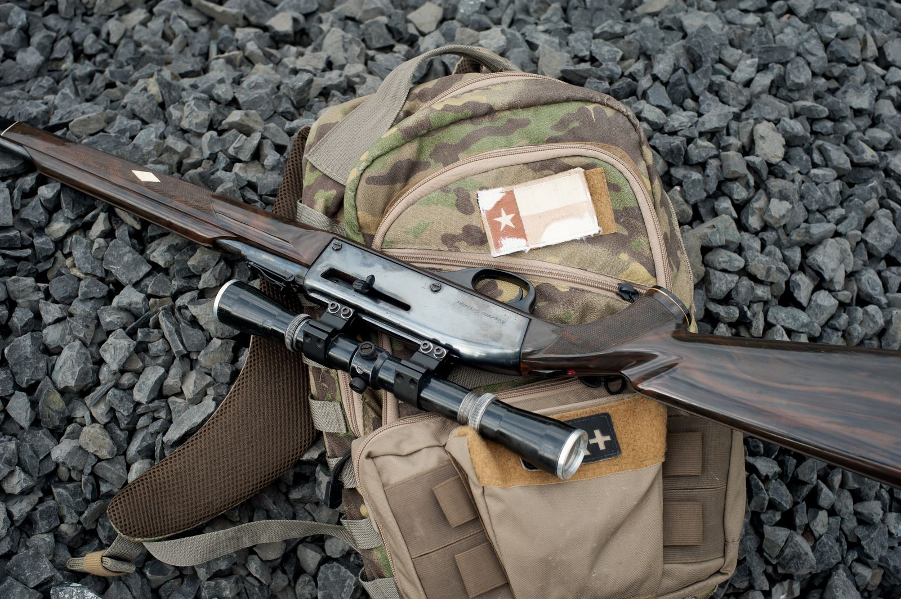

Whether you're going after springbok, kudu or warthog — nothing ruins a hunt like discovering at 5 am on the farm that your ammo is in Robertson. Print this list, tape it to the gun safe, and pack against it the night before.
The firearm kit
- Rifle — cleaned, zeroed and transported in a padded case
- Licence card (and a copy) — non-negotiable
- Ammunition — at least 20 rounds of the same batch you zeroed with
- Shooting sticks or bipod
- Basic cleaning kit: pull-through, oil, cloth
- Soft rifle sling and spare sling swivels
Clothing (Karoo winter = four seasons a day)
- Walked-in boots and two pairs of good socks per day
- Layers: thermal base, warm fleece, quiet outer jacket in earth tones
- Beanie and gloves for the dawn drive; wide-brim hat for midday
- Tough long trousers — Karoo scrub shreds shorts and soft fabrics
Field gear
- Binoculars — you'll glass ten times more than you shoot
- Sharp hunting knife (plus a multi-tool — see our Leatherman review)
- Headlamp with spare batteries
- Day pack with water bladder or bottles — 2 litres minimum
- Basic first-aid kit and any personal medication
- Biltong, energy bars and padkos — glassing is hungry work
For after the shot
- Cooler boxes with ice bricks — more than you think you need
- Game bags or clean cotton sheets for meat
- Latex gloves for the gutting work
- Heavy-duty refuse bags and cable ties
The things everyone forgets
- Power bank and charging cables — farm signal hunts your battery
- Sunscreen and lip balm (winter sun burns too)
- Cash for farm staff gratuities and padstal coffee
- Camera or a clean phone lens — you'll want the memory
Missing anything on this list? That's literally why we exist. One stop at 8 Voortrekker Ave and you're packed.
Tick the whole list in one stop
Ammo, optics, knives, clothing, coolers and everything in between — in stock in Robertson.
Get Packing Help Outdoor Gear